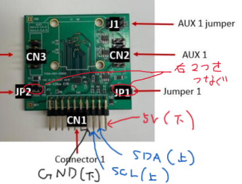

STM32資料 応用編1
I2C通信でセンサーと通信をしてみよう
今回はセンサーとの通信の練習のため、一番簡単な読み取りである"Who Am I"をやってみよう
これはセンサーの中にある決まった値を返してくれるメモリ（レジスタ）にアクセスし通信の確立をチェックするのに使う
今回やること
作業の流れ
- ピンを割り当てる
- wrapper.cppにコードを書き込む
- センサーとSTM32をつなぐ
- TeraTermでデータを受信する
ピンの割り当て
今回は、I2Cという機能を使って通信を行う
PB8とPB9にI2C1_SCL（クロック）とI2C1_SDA（データ）を割り当てておこう
プログラム
I2C通信で読み取りをする関数
今回は通信の確立テストをするだけなので、読み取り関数のみ紹介する
関数
HAL_I2C_Mem_Read(&hi2cx, I2CADDR, REGISTER, REGLen, Data, DataLen, TimeOut);この関数の引数
| 引数名 | 変数型 | 内容 |
|---|---|---|
| &hi2c1 | I2C_HandleTypeDef* | I2Cのポインタ（xはI2Cの番号） |
| I2CADDR | uint8_t | 送信相手のアドレス |
| REGISTER | uint8_t | 読み取るレジスタアドレス |
| REGLen | uint16_t | 読み取るレジスタの数 |
| Data | uint8_t* | 読み取った値を入れるバッファー（ポインタ） |
| DataLen | uint16_t | 読み取るデータの数 |
| TimeOut | uint32_t | 最大実行時間（超えたら処理を諦める） |
回路
今回はICM45686というセンサーの評価ボードを使用する
配線はこの通りに繋げば動くので、上下のピンを間違えないようにしてね
| 用途 | STM32 | ICM45686 |
|---|---|---|
| クロック線 | D15(PB8に対応) | CN1_16 |
| データ線 | D14(PB9に対応) | CN1_18 |
| 5V線 | 5V | CN1_19 |
| GND線 | GND | CN1_13 |
サンプルコード
ICM45686の"WHOAMIレジスタ"（通信確立などに使う）の値を読み取るコード紹介する
データシートには"0xE9(233)"が返ってくると書いてあるので、この値が受信できるか試してみよう
I2Cアドレスやレジスタアドレスもデータシートに書いてあるよ
#include "wrapper.hpp"
#include "usart.h"
#include "i2c.h"
#include "string"
void init(){
}
void loop(){
//引数を定義
uint8_t I2CADDR = 0x68 << 1;
uint8_t REGISTER = 0x72;
uint8_t Data = 0;
//センサーからデータを読み取り
HAL_I2C_Mem_Read(&hi2c1, I2CADDR, REGISTER, 1, &Data, 1, 1000);
//読み取った値をPCに送信
std::string str = "WHOAMI: " + std::to_string(Data) + "\n";
HAL_UART_Transmit(&huart2, (uint8_t *)str.c_str(),str.length(),100);
HAL_Delay(1000);
} 終わりに
今回はセンサーとの通信の基本をやってみました
次回は、実際にセンサーデータを取得してみよう